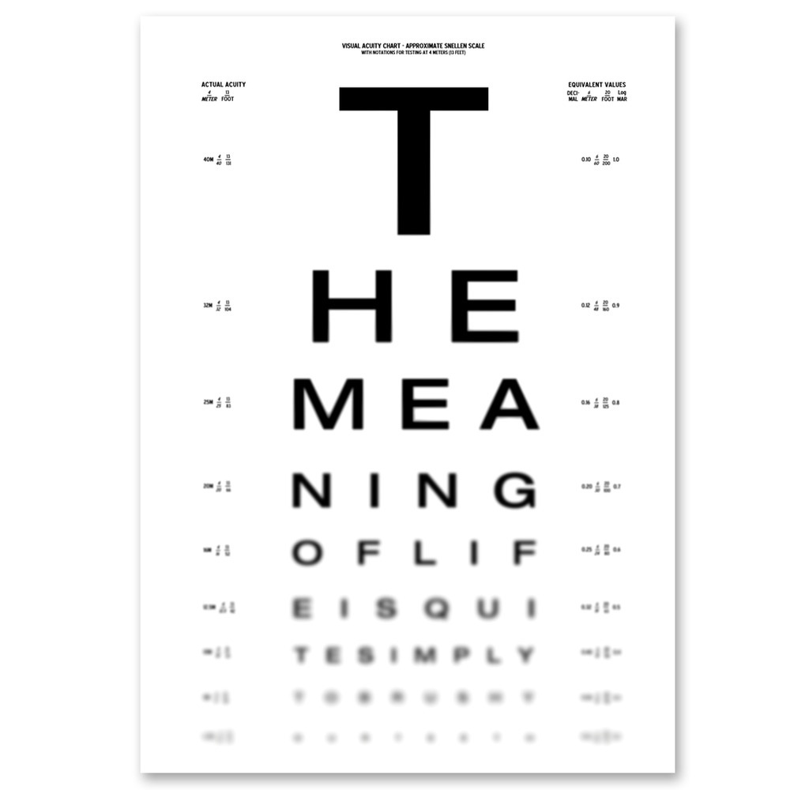

TH1 Semantics

Overview
- Extends that of TH0 and TF1
- Compatible with that of existing higher-order ATP and ITP systems
- Model theory: Henkin semantics
- Extended with choice
- Extended with shallow polymorphism
- Proof theory: Inference rules (below)
- Closest to those of HOL Light
Proof Theory
- Structural rules
- Assumption
- Instantiation of types and terms
- Equality
- Equality of booleans as logical equivalence
- Modus ponens
- Deduction of logical equivalence (propositional extensionality)
- Function types
- Beta reduction
- η axiom (functional extensionality)
- Other connectives
- Axioms for defining first-order connectives in terms of equality
- ι and ε choice axioms (classicality)
Questions
- Should be emailed to Cezary (or Florian)